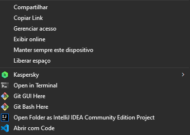
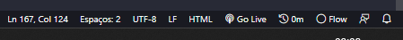

Para usar o CRUD
Siga as instruções abaixo com atenção para usar o CRUD no Windows:
- Após fazer o download do arquivo compactado .zip, abra a pasta em que ele foi baixado no seu computador. Geralmente esta pasta é a de Downloads.
- Descompacte o arquivo, usando um descompactador de zip ou copiando os arquivos para uma pasta que você deve criar (no caso de um descompactador isso não é necessário).
- Após ter os arquivos descompactados é necessário que você tenha um editor de texto. Neste tutorial usaremos o Visual Studio Code.
- Ainda no Explorador de Arquivos, clique com o botão direito do mouse para abrir o menu flutuante. Após aberto e com o Visual Studio Code instalado, clique na opção "Abrir com Code": 
- Caso você ainda não tenha o Node.JS instalado na sua máquina você pode baixá-lo por aqui e em seguida instalá-lo. Escolha a versão LTS para download.
-
Dentro do Visual Studio Code clique em [CTRL] + [J] para abrir o Terminal. É importante que o caminho que aparecer no Terminal seja a raiz do diretório com os arquivos. Por isso deve aparecer algo do tipo:
Observe que o caminho que o Terminal aponta não é um arquivo ou um diretório anterior.
PS C:\Users\Gabriel\Downloads\sprint-3> -
Dentro do Terminal, digite a instrução que verifica a verão do Node instalada:
E deverá ser retornado algo do tipo:
node -vv18.12.1 -
Feito isso, ainda no terminal, é necessário iniciar o NPM, com o comando:
E em seguida o Terminal fará algumas perguntas sobre os dados do pacote, você pode dar [ENTER] para deixar cada informação em branco.
npm init -
Ao finalizar o processo um arquivo de nome 'package.json' deverá ser criado. Agora só é preciso iniciar o JSON Server, com o comando:
Se tudo der certo uma mensagem como esta será retornada:
npx json-server --watch db.json\{^_^}/ hi! Loading db.json Done Resources http://localhost:3000/produtos Home http://localhost:3000 - Baixe a extensão Live Server no Visual Studio Code e depois de baixada, clique em "Go live" no menu inferior: 
E assim o CRUD já funciona.
É importante lembrar que todas as vezes que você fechar o Visual Studio Code, será necessário, dentro do programa dar [CTRL] + [J] (para abrir o Terminal) e o comando npx json-server --watch db.json (para iniciar o JSON Server).
- Resumindo
- Baixe o arquivo compactado
- Descompacte o arquivo e o abra no Visual Studio Code
- Abra o Terminal na raiz do projeto
- É preciso ter o Node.JS instalado
- Inicialize o NPM com o comando
npm init - Inicialize o JSON Server como o comando
npx json-server --watch db.json